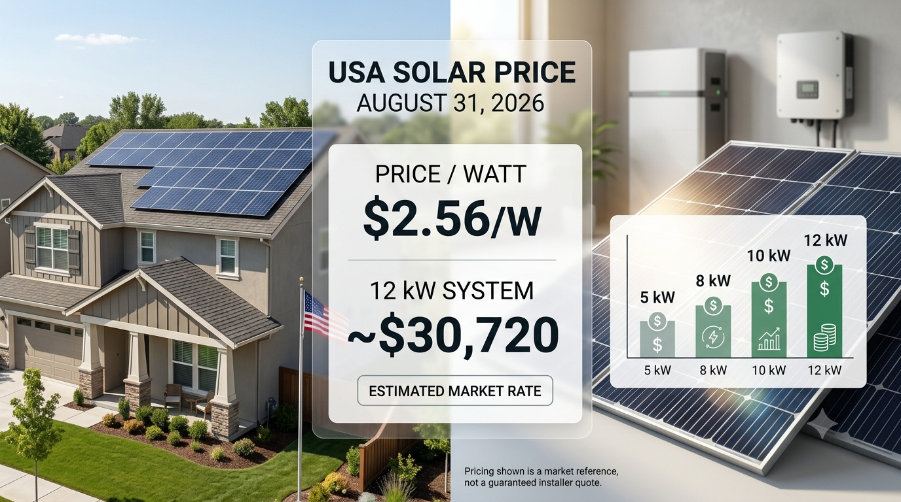

Solar Panel Prices in the USA Today — August 31, 2026
Updated August 31, 2026
If you're checking the solar panel price in the USA today, it is important to separate the price of solar modules from the cost of a complete installed solar system. Panel-only prices are much lower than the final residential project price because installation, inverters, mounting, electrical work and permitting add significant costs.
Solar Rate Today: August 31, 2026
| Price Type | Current Reference |
|---|---|
| Solar panel/module price | Approximately $0.17–$0.41/W |
| U.S.-assembled module reference | Approximately $0.30/W |
| Average installed solar rate | Approximately $2.60/W |
| 12 kW system rate | Approximately $2.56/W |
| 12 kW system reference cost | Approximately $30,720 before incentives |
These are market-reference figures rather than guaranteed installer quotes. Panel pricing can vary by manufacturer, efficiency, quantity and sourcing, while installed prices vary by location, roof, labor, equipment and project requirements.
Solar Panel Price vs. Installed Solar Price
A panel-only price covers the photovoltaic module. A complete residential solar installation can also include an inverter, racking, wiring, labor, permitting, inspection and other balance-of-system costs. For homeowners, the installed price per watt is therefore usually the more useful number for comparing complete solar projects.
How Much Does a 12 kW Solar System Cost?
At approximately $2.56/W, a 12 kW system works out to about $30,720 before incentives. Actual quotes can be higher or lower depending on the property and equipment.
Why Solar Prices Differ Across the USA
Solar pricing varies because of state labor costs, roof complexity, local permitting, system size, panel and inverter selection, electrical upgrades, financing and utility requirements. A quote in Texas can therefore differ substantially from one in California or New York.
Solar Panels and Battery Storage
Adding a battery increases the upfront cost but can allow a homeowner to store excess daytime solar for later use. Battery storage can be particularly useful where evening electricity prices are high, export compensation is lower than retail electricity rates, or backup power is important.
How to Compare Solar Quotes
When comparing quotes, look at the total project cost, price per watt, panel model, inverter, expected annual production, warranty, financing and battery options. The cheapest quote is not automatically the best value.
Final Takeaway
For August 31, 2026, a useful U.S. market reference is roughly $0.17–$0.41/W for solar modules and about $2.60/W for average installed residential solar. A 12 kW system is around $2.56/W, or about $30,720 before incentives. Always request detailed local quotes because actual prices vary by project.